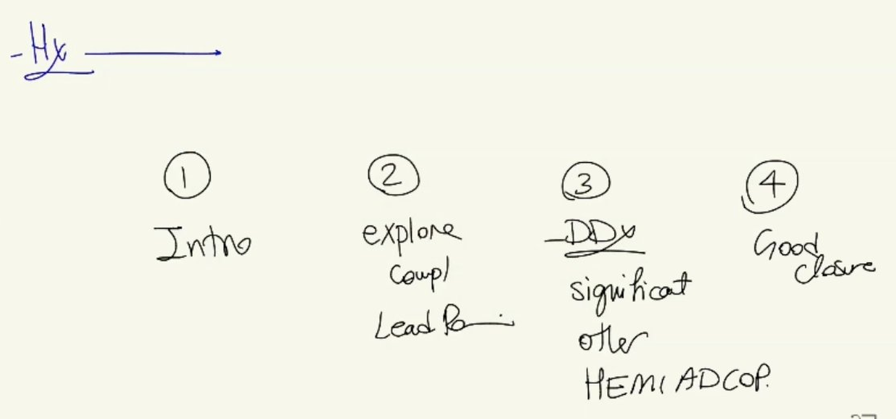
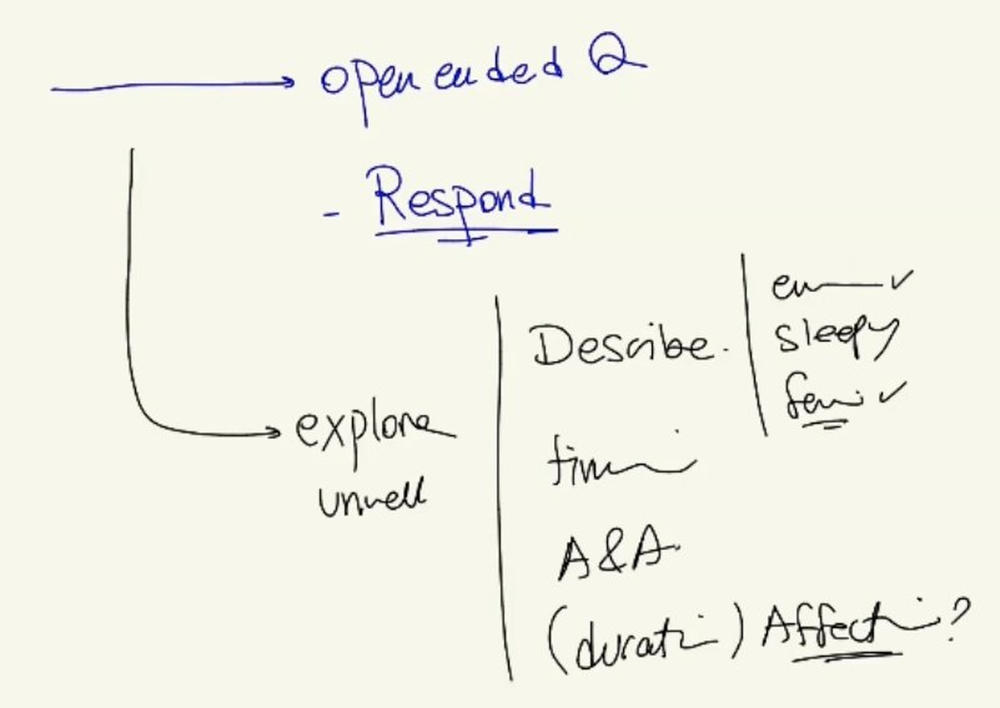
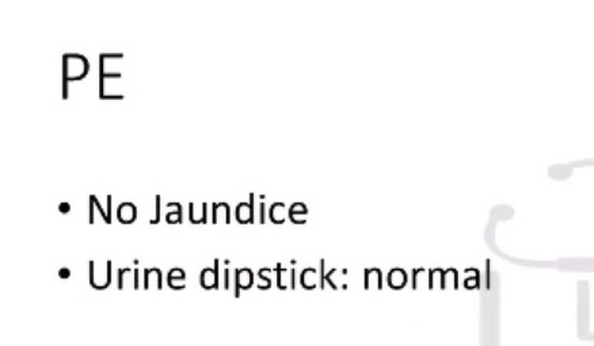

Unwell After a Fall into a Sewer (Hepatitis A vs Gastroenteritis)
Source: Dr. Amir workshop — Med workshop 2 - 2026 / CLASS 5 UNWELL (Aug 2026 drop) · Specialty: general_practice
Case Overview
A 30-year-old woman ('Jenny') presents feeling unwell after a workplace incident. Two lead points must both be explored: 'unwell' and the 'incident at work'. The station runs in two versions with the same faeco-oral exposure: Version 1 - Hepatitis A and Version 2 - gastroenteritis. Tasks: 6-minute history, examination on card, explain diagnosis and differentials.
Opening and Structure
Sit, introduce, open-ended question, empathic response. Structure: explore the unwell complaint then the incident, then differentials (fecal-oral cluster first, then psychological and malignancy), then HEMI ADCOP, then closure if time permits (low priority - do not sacrifice differentials).
Explore the Unwell Complaint
- Describe: low energy / sleepy / feverish (feverish with night sweats)
- Timing, aggravating and relieving factors, impact on work and daily life
Lead Point - Incident at Work (Critical)
- Open-ended: 'Can you tell me more about the incident?'
- Occupation: sewer sampler (post-COVID sewage surveillance); slipped climbing the ladder and fell in
- Head injury - priority #1 in any fall (did you hit your head?)
- PPE worn (yes)
- Did fluid enter mouth/eyes? ('everything happened so fast' - engineered uncertainty about the exposure route; marks for asking)
- Incident report filed (yes) - GP documents the work-related injury and supports the WorkCover claim
Significant Differentials - Fecal-Oral Infections
Gastroenteritis (Shigella, E. coli, rotavirus, Entamoeba, Giardia): fever/chills, nausea/vomiting, diarrhoea, blood in stool (red flag - always ask), abdominal pain.
Hepatitis A: abdominal pain, nausea/vomiting, jaundice, dark urine, pale (clay-coloured) stools, itch.
Toxoplasmosis / CMV: rash, lymphadenopathy (neck, axillae, groin).
Other Differentials
- Psychological - PTSD / adjustment disorder after a traumatic incident (mood, stress source, avoidance of work, nightmares/flashbacks)
- Malignancy - leukaemia, lymphoma (and bowel cancer in the GE version)
- Other infections - travel, STIs, viral prodrome
- HEMI ADCOP to complete the undifferentiated-unwell list
Version 1 - Hepatitis A
Findings: fever + night sweats; right upper quadrant abdominal pain; no visible jaundice; no dark urine/pale stools. Examination: no clinical jaundice but urine dipstick bilirubin positive - the key finding (absence of visible jaundice does not exclude hepatitis). Diagnosis: hepatitis, most likely Hepatitis A. Three reasons: symptoms (RUQ pain + fever), exposure (sewer/faeces), examination (bilirubinuria).
Version 2 - Gastroenteritis
Findings: fever, night sweats, lower abdominal pain, diarrhoea with mucus (key distinction), nausea; no jaundice; urine dipstick normal (no bilirubin - excludes liver involvement). Diagnosis: gastroenteritis. Three reasons: exposure to faeces, symptoms (diarrhoea/nausea/fever), and no other findings. Confirm organism with stool MCS. Differentials as above plus bowel cancer.
Case Figures




🔬 Expert Review & Enhancements
Reviewed by: history-taking-expert (Australian clinical supervisor) · fact-checked against the irStudy medical textbook RAG index.
✏️ Corrections
Bilirubinuria indicates conjugated (direct) hyperbilirubinaemia, which occurs in hepatocellular as well as cholestatic disease; it is a marker of hepatobiliary inflammation but does not by itself indicate a specifically 'cholestatic' picture. Describe it as evidence of conjugated hyperbilirubinaemia/liver involvement rather than cholestasis specifically.
⭐ Suggested Enhancements
🏷️ Metadata
📚 Reference Citations (RAG)
John Murtagh General Practice, 8th Edition.pdf p.80 qdrant:c4c0c7c3-11ce-41ad-b015-a13ca14f48ba
John Murtagh General Practice, 8th Edition.pdf p.561 qdrant:4e274738-2797-407f-ac16-fbc7d02debdd
AMC Handbook of Clinical Assessment.pdf p.430 qdrant:2739255e-e747-484e-bc55-f0fe744847a9